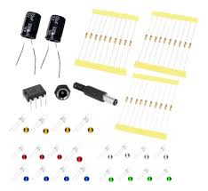
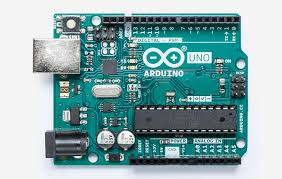
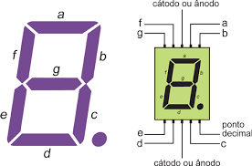

Fundamentos de Eletrônica
A disciplina Fundamentos de Eletrônica tem como objetivo introduzir os conceitos que sustentam o funcionamento de todos os dispositivos eletrônicos modernos. Nela, o estudante aprende sobre corrente elétrica, tensão, resistência e o papel de componentes como resistores, diodos, transistores e circuitos integrados.
Além da teoria, a matéria também aborda o uso de sensores e microcontroladores, como o Arduíno, aplicados em projetos de automação e robótica. Com esse conhecimento, o aluno desenvolve a capacidade de entender, montar e testar circuitos, dando os primeiros passos para criar soluções tecnológicas práticas e inovadoras.
Componentes Eletrônicos
Os componentes eletrônicos são a base de qualquer circuito. O resistor limita a passagem de corrente elétrica, protegendo outros componentes. O diodo LED emite luz quando a corrente passa por ele, sendo usado em indicadores e iluminação. O transistor atua como interruptor ou amplificador de sinais, essencial em sistemas de controle. Já o circuito integrado (CI) reúne vários componentes em um único chip, permitindo criar funções complexas em pouco espaço.
Sensores em sistemas automatizados
Os sensores captam informações do ambiente e as transformam em sinais elétricos. O sensor de temperatura mede o calor do ambiente, o sensor de umidade detecta o nível de água no ar e o sensor de luminosidade ajusta automaticamente a iluminação. Esses dispositivos são fundamentais para sistemas automatizados, tornando-os mais inteligentes e eficientes.

O Arduíno
O Arduíno é uma plataforma de prototipagem eletrônica de código aberto, composta por uma placa com microcontrolador e um ambiente de programação simples. É usado em projetos de automação, robótica, sensores e controle de dispositivos. Entre suas vantagens estão o baixo custo, a facilidade de aprendizado e a ampla comunidade de suporte. Como desvantagens, possui limitações de processamento e memória em comparação com sistemas mais avançados.
Como o Arduíno funciona?
O Arduíno funciona por meio de um microcontrolador que executa instruções enviadas por um programa. Ele recebe sinais de entradas (como sensores) e envia sinais de saídas (como LEDs, motores ou relés). Esse tipo de aplicação faz parte da chamada eletrônica embarcada, que integra sistemas eletrônicos e de software em máquinas e produtos como carros, eletrodomésticos e equipamentos industriais.

Linguagem usada no Arduíno
A principal linguagem usada no Arduíno é baseada em C e C++, adaptada para comandos simples e funções prontas. Também é possível programá-lo em Python, com bibliotecas específicas. Essa flexibilidade torna o Arduíno acessível tanto para iniciantes quanto para programadores experientes.
Entradas e saídas digitais
As entradas digitais recebem sinais elétricos que só podem estar em dois estados: ligado (1) ou desligado (0). As saídas digitais enviam sinais nesses mesmos níveis, acionando LEDs, relés e motores. Essa lógica digital é a base do funcionamento da maioria dos sistemas eletrônicos modernos.

Entradas e saídas analógicas
As entradas analógicas leem sinais variáveis, como luz ou temperatura, convertendo-os em valores numéricos através de um conversor A/D. Já as saídas analógicas permitem enviar sinais com diferentes intensidades, controlando, por exemplo, a velocidade de um motor ou o brilho de um LED.

Script para cálculo da tensão, corrente e resistência pela Lei de Ohm
A Lei de Ohm relaciona tensão (V), corrente (I) e resistência (R). Esses scripts permitem calcular qualquer um desses valores conhecendo dois deles.
// Calcular Tensão (V)
float calcTensao(float corrente, float resistencia) {
return corrente * resistencia;
}
// Calcular Corrente (I)
float calcCorrente(float tensao, float resistencia) {
return tensao / resistencia;
}
// Calcular Resistência (R)
float calcResistencia(float tensao, float corrente) {
return tensao / corrente;
}Script para cálculo da potência elétrica
A potência elétrica pode ser calculada usando as fórmulas: P = V × I, P = V² / R e P = I² × R.
// Potência usando tensão e corrente
float potenciaVI(float tensao, float corrente) {
return tensao * corrente;
}
// Potência usando tensão e resistência
float potenciaVR(float tensao, float resistencia) {
return (tensao * tensao) / resistencia;
}
// Potência usando corrente e resistência
float potenciaIR(float corrente, float resistencia) {
return (corrente * corrente) * resistencia;
}Programa para leitura de sensor analógico e acionamento de saídas digitais
Este programa lê um sensor conectado à porta A0 e aciona um LED quando o valor ultrapassa um limite.
int sensor = A0;
int led = 9;
int valorLido = 0;
void setup() {
Serial.begin(9600);
pinMode(led, OUTPUT);
}
void loop() {
valorLido = analogRead(sensor);
Serial.println(valorLido);
if (valorLido > 500) {
digitalWrite(led, HIGH);
} else {
digitalWrite(led, LOW);
}
delay(200);
}O que é um diodo, um diodo LED e um display de 7 segmentos?
O diodo permite a passagem de corrente em apenas um sentido, funcionando como uma válvula eletrônica. O diodo LED emite luz quando energizado. Já o display de 7 segmentos é formado por vários LEDs que exibem números, muito utilizado em relógios, calculadoras e painéis eletrônicos.
